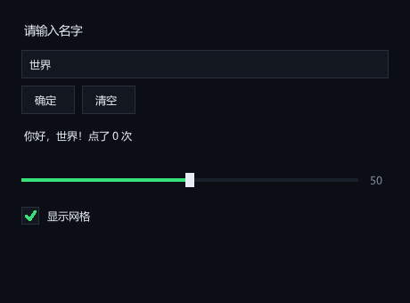
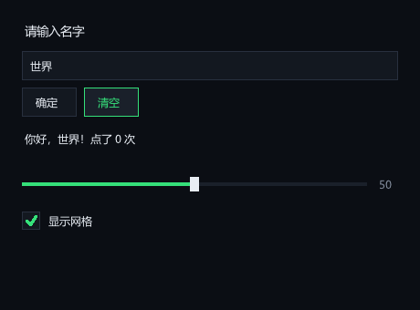
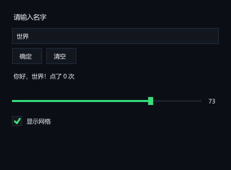

PYbook
版本 1.0.5
中文编程入门语言
写中文，编译成真正的 C，跑出 60 FPS 的游戏
桌面 GUI：按钮 / 输入框 / 滑条 / 勾选，支持中文输入法 ·
3D 真 OpenGL 着色器（GLSL）· 编译器提速 · 14 个前缀库
⬇ 下载完整包
pybook-1.0.5.zip · 14.6 MB · 解压即用（只需 Python 3.10+ 和 PATH 上的 gcc）
桌面 GUI 窗口程序
14 个前缀库
2D 游戏 SDL2
3D OpenGL 着色器
网页实时模式
神经网络 torchbk
网络 TCP
音频
# 你的第一个 PYbook 程序
GOING:{
vg.名字 = "世界"
ns.show(你好，$名字！)
}STOP
# 本版新东西：带按钮和输入框的原生窗口程序（拷贝即用）
GOING:{
win(380, 220, "我的第一个设置窗")
color(11, 14, 20)
音量 = 60.0
名字 = "世界"
开音乐 = 1
提示 = "改点东西试试 →"
rm.aging.while(end()) {
clear()
ui.begin(20, 18, 340)
ui.label("设置", 20)
ui.gap(6)
ui.label("名字", 14)
名字 = ui.input(名字)
ui.gap(8)
音量 = ui.slider(音量, 0, 100)
开音乐 = ui.check("开音乐", 开音乐)
ui.gap(10)
ui.row()
if(ui.button("保存")) {
提示 = "已保存：$名字 音量=$音量 开音乐=$开音乐"
}
ui.end()
ui.gap(8)
ui.label("$提示", 14)
ui.end() # ui.begin 必须和 ui.end 配对
show()
wait(16)
}
}STOP



这个窗口是 PYbook 自己画的，没有用任何第三方界面库：单行输入框（可打中文）、按钮、滑条、勾选框，
全部由 ui.* 立即模式 API 生成。
下面两张细节：按钮悬停会高亮；拖完滑条数值从 50 变成 73 —— 状态真的存在脚本变量里，控件只是每帧重画一遍
迭代日志 —— 每个版本加了什么
1.0.5 2026-09-27 · 桌面 GUI + 三个引擎修复
- 桌面 GUI：ui.* 立即模式界面库（11 个 API）——按钮 / 单行输入（支持中文输入法）/ 滑条 / 勾选框 / 标签，横排竖排容器 + 间距 + id 绑定。SDL2 自绘、零新依赖，没有控件对象也没有事件回调，每帧重声明一遍，函数直接返回交互结果——写三行就是一个表单
- 语言修复：用户函数现在能裸调用当语句（硬伤）——原来 干活() 这种写法会被编译器拒掉（"不是合法的语句开头"），只能绕成 vg.丢弃 = 干活()，procedural 写法全废。是拿一份现成的模块库做端到端验收时暴露的
- js.dump 支持类实例——之前对 lb. 对象调用会报莫名的"需要整数"，于是存档库一存玩家对象就崩；现在按属性名平铺成 JSON 对象，存读往返可用
- ns.show() 空参输出空行（与 print() 一致），并修掉错误提示里重复的行号前缀（"第 7 行：第 7 行：…"）
- 验收方式换了：不再只看"没崩"——拿 7 个模块的现成库真编译真跑（26 项断言全绿）+ 开窗口跑满 30 帧的冒烟测试 + C 探针出图比对
1.0.4 2026-09-25 · 3D 可编程管线 + Godot 级编译器
- 3D 上真 OpenGL 着色器：新增 hw.preset（6 个内置着色器：朗伯 / 卡通 / 边缘光 / 棋盘 / 法线 / 自发光）、hw.shader（写自己的 GLSL）、hw.shaderuse（一帧里中途切换）、hw.uni（设 uniform）。用 GLSL 120 吃固定管线内建量，1400 行几何代码一行没改成 VBO；实测驱动是 OpenGL 4.6 兼容 profile
- 3D 补全：球 / 圆柱 / 圆锥 / 线段 / 真方向光 / 视场角与近裁剪面可调 / hw.ortho 正交投影（俯视图、等距对齐视图，不再只有透视） / 贴图（png·jpg·bmp·tga + 透明裁剪 + UV 平铺）/ 父子层级 hw.push·hw.pop（最多 20 层，转桌子桌上的东西跟着转）
- 编译器提速：rm.around 热点标量化 + 字典哈希索引——速度对决从"比 Python 慢 80 倍"追到 1.68s vs 0.62s
- 新标准库：js.（JSON 解析/序列化）、csv.（RFC4180）、bs.（位运算 15 个）、mm. MyMove（列表即像素画，手写 PNG 编码器零依赖，像素级比对全对）、音乐库扩展（音.音 / 音.奏 / 音.谱——列表做音乐，直接落 WAV）
- VM 后端：新增字典字面量（DICT_NEW / DICT_SET）与标准库调用（CALL_LIB），VM 模式不再只能跑纯语言子集
- 语言/工具：查(条件,"名字") 测试断言 + --test 退出码、引用("模块") 模块合类、web.块 组件复用 / web.页 多页、多核加速（大矩阵自动并行 2.64×）、积木编辑器
1.0.3 2026-09-19 · 新版 Web + torchpybk
- torchpybk 分类补全：softmax / 交叉熵 / argmax、SGD / Adam 优化器、shuffle / onehot / batch 数据原语——MNIST 式分类全链路可跑，示例网络训练到 100% 准确率
- Web 交互全套：输入框 / 按钮控件（textbox·button）、读取表达（web.text·down·click·mx·my）、音频 / 标题 / 样式 / 本地存储 / 等待 / 翻转贴图
- 修复三处：web.audio.stop 与 web.waitsec 一用即崩、mp.mat_scale 参数个数错误
- 文档：PYBOOK_AI.md 新增神经网络 / math+ / numpybk / Web / 3D 五章（示例全部过 --check）
1.0.2 2026-09-19 · 编辑器 / IDE / AI 规范
- 场景编辑器 editor.exe、PYbookIDE.exe（写代码+编译+运行一体）
- AI 编程四件套：--check 秒验语法、报错带行号带改法、PYBOOK_AI.md + llms.txt 规范
- 语言升级：字典 / 推导式 / try-catch / onerror / .get·.at / 切片 / 三元 / 插值 / 默认参数
- 网页画布与动画：web.draw、web.帧 / web.播放 / web.实时
- 全部新游戏与四语言开发速度基准
1.0.1 2026-09-13 · 网页模式起步
- 在线《物理引擎实验室》：滑条 / 按钮 / 输入框 + 鼠标交互
- web 段落输出（big / mid / show / img / line / link）+ /magic 修饰
1.0.0 2026-09-13 · 首发
- 中文语法编译到 C：60 FPS SDL2 原生窗口、3D 模块、TCP 网络
- math+（mp）/ numpybk（np）/ torchpybk（tb）三库齐备
- 内置游戏：占点突击、飞船大战、AI 走迷宫、伪 3D 走廊、鼠标勇士、霓虹突袭 等